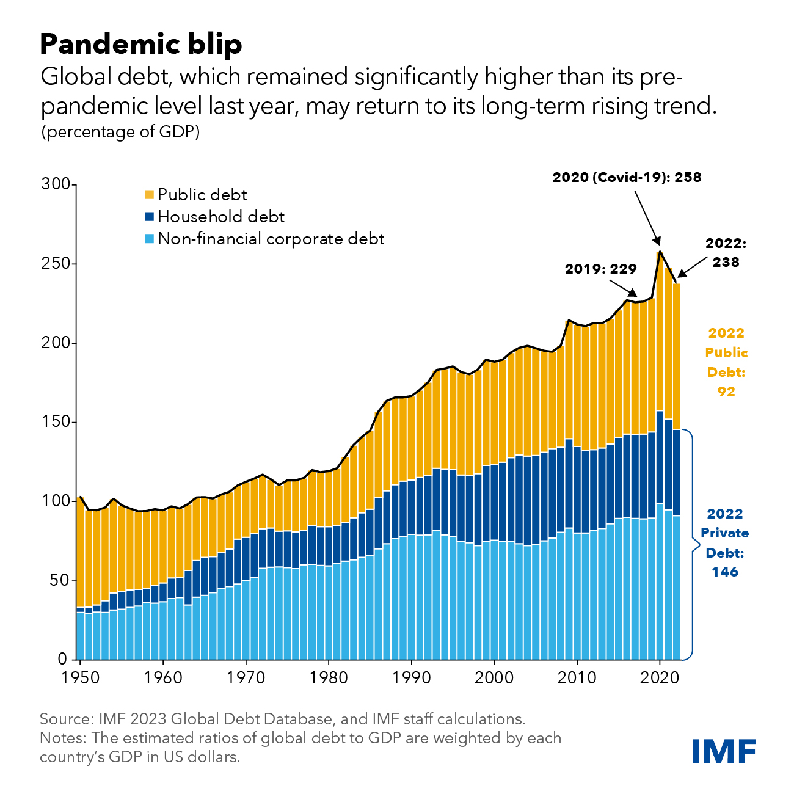
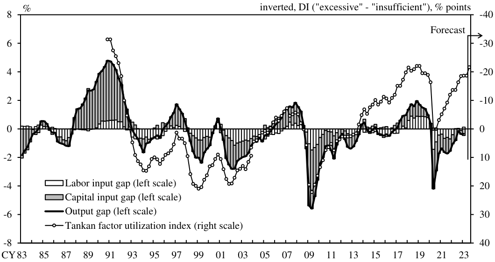
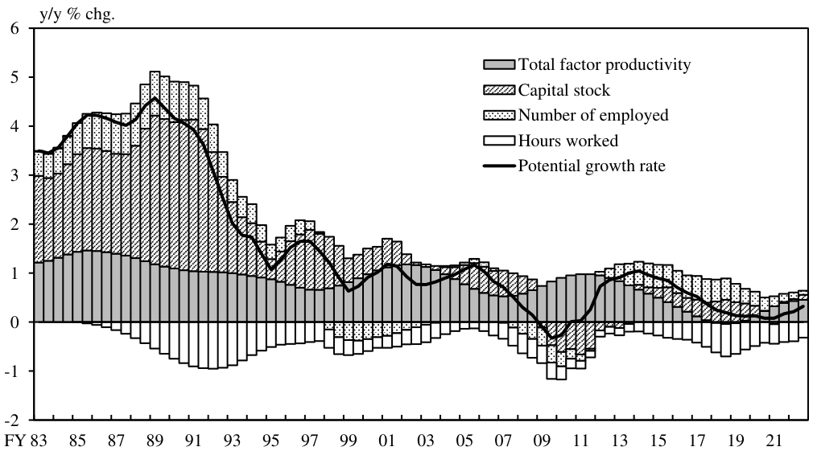
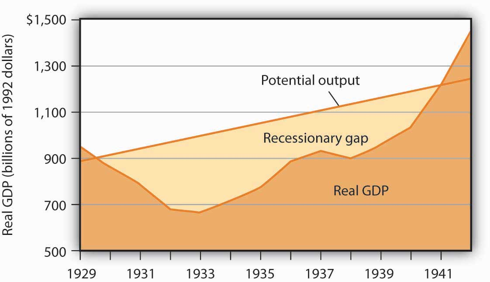

尝试理解“资产负债表衰退”

根据 Wikipedia 的条目，资产负债表衰退 (Balance Sheet Recession) 是指一种经济衰退的现象，其成因是私人部门的高负债导致个人或企业普遍地偿还债务以增加储蓄，而不是消费或投资，进而导致经济增长放缓或下降，发生经济衰退。该术语最早由经济学家辜朝明 (Richard C. Koo) 提出，用来解释1990年开始的日本经济衰退以及1930年代的美国经济大萧条。
如何分辨是否发生了资产负债表衰退
市场中的普遍观点认为，“资产负债表衰退”描述的宏观现象包括经济主体大规模去杠杆以及经济发生衰退。然而其中“去杠杆”与“衰退”的说法都不够准确，更准确的应该说法是“私人部门去杠杆”以及“经济产出缺口为负”。前一部分，在私人部门去杠杆的同时，政府可以通过加杠杆来对冲私人部门的冲击；后一部分，实际的产出弱于潜在的经济水平，并不意味着经济增长就陷入衰退，在潜在经济增速较高而产出缺口较小的情况下，经济依然能够维持正增长。实际上，日本在“失去的二十年”期间正是这种情况，大量的政府债务替换了私人部门卸下的杠杆，同时也基本维持了经济的正向增长。因而，即使发生了“资产负债表衰退”，经济整体的杠杆率还是可升可降的，经济增长也是可正可负的，所以不能仅仅通过杠杆率和经济增长就来判断是否发生了“资产负债表衰退”。
同样，在谈论“资产负债表衰退”时，人们往往以其诞生的环境——日本的平成大萧条——作为典型，认为资产负债表衰退总是发生在资产泡沫破裂之后。然而过分强调前期资产价格的大幅下跌，显然是只看到了以往现象的相似表面，而忽略了现象背后的经济原理。要知道“资产负债表衰退”的核心是，私人部门（企业和家庭）暂时将债务最小化作为目标，从而对刺激信贷扩张的利率政策不敏感，导致货币政策传导路径失效，陷入了流动性陷阱。也就是说，私人部门不响应低利率的环境，反而开始主动还债了。这是为什么呢？
按照辜朝明的解释，经济泡沫期间，人们倾向于加杠杆、借钱，再用借来的钱去赚钱。泡沫破灭后，资产价格崩溃，但负债依然还在，所以他们的资产负债表陷入困境。一旦资产负债表陷入困境，基本上就意味着破产。但是破产也要分两种情况：如果现金流还不错，就可以用现金流偿还债务；如果没有现金流，那就意味着企业走到终点，别无他法。
辜朝明是在 1996、1997 年左右，也即日本经济泡沫破灭七年之后，提出“资产负债表衰退”这一概念的。当时，他正在研究日本企业从资本市场和银行系统中融资的实际情况，结果发现，日本企业当时并没有进行融资，而是在偿还债务。他发现，1990 年时，日本全国范围内商业地产价格下跌了 87%，但日本对许多国家还保持着巨大的贸易顺差，各国都在进口日本车、日本相机，所以日本公司尽管资产负债表陷入困境，但还有现金流。在这种情况下，企业开始用现金流偿还债务。如此一来，就不必向股东报告糟糕的资产状况，不必让银行认为自己的债务都是不良贷款，也不必即刻裁员。因此，对所有利益相关方而言，用现金流偿还债务是一种正确且负责任的做法。当所有人都同时修复资产负债表时，即使利率降至零，大家也仍会选择继续偿还债务，不会有人借钱，这将导致严重的通货紧缩。
这就是“资产负债表衰退”产生的背景。诚然，资产泡沫破裂是最为显著的主动还债的动因。资产泡沫破裂之后，企业和家庭资不抵债，需要通过还债来修复资产负债表，利率再低也不愿意多借钱，直到资产负债表修复完成为止。
然而资产价格泡沫的破裂只是导致私人部门主动还债的原因之一，放在更一般的框架之下，还存在其他的经济环境，即使没有泡沫的破裂，也会使得私人部门主动还债。因而是否发生了资产泡沫破裂（包括私人部门资产负债表是否受损）并不是判断资产负债表衰退的核心要素，更关键的是判断私人部门的债务处理倾向。
透视资产负债表衰退
资产负债表衰退是对流动性陷阱的进一步阐释，其背后的原理依然是负债驱动的经济波动，只不过放在了全新的信用货币体系框架之内。
辜朝明在参加第五届外滩金融峰会的活动时说过：
流动性陷阱是一种描述，而非解释。资产负债表衰退则是对流动性陷阱的解释。当所有人都同时修复资产负债表时，即使利率降至零，大家也仍会选择继续偿还债务，不会有人借钱。而在资产负债表衰退的情况下，货币政策在很大程度上会无效。
可见，资产负债表衰退并没有超出传统宏观经济学的框架。而在宏观经济学的分析框架中，要明确的是，经济波动与经济的内生增长是全然不同的两个分析角度。资产负债表衰退关注的只是经济波动，或者说是产出缺口，而不涉及内生增长。因此，如果希望通过资产负债表衰退来讨论经济增长的问题，则一定要建立在内生经济增长水平的基础之上。
在之前的文章中，我们探讨过债务周期导致经济波动的原理，说明了债务扩张（通胀）可以推动经济产出大于内生增长，反过来还债的时候（通缩）则是实际产出小于内生水平。债务扩张对应着资产负债表扩张，债务收缩也就对应着资产负债表衰退。可见，资产负债表衰退本就是经济波动的正常表征，并没有特殊的含义。但在现实世界中，经济体之所以开始还债，往往是由资产泡沫的破裂引起的，而且还债时往往会叠加内生增长的减速，所以显得影响特别大。
上行周期：资产负债表扩张 => 加杠杆
探究根源的话，之所以会发生资产负债表衰退，是因为前期经历了资产负债表扩张的过程。资产负债表扩张的本意在于，在经济体受到意外冲击而造成经济增长减速时，通过扩张政策拉高实际产出，弥补冲击的效果，以熨平经济波动。等到经济增长恢复或者过热时，再通过紧缩政策反向压低实际产出，回收超发的货币。但在实际操作中，由于债务扩张政策所带来的收益是显性的、成本是隐形的，而债务紧缩政策则恰恰相反，所以债务扩张政策对决策层的激励更大，甚至在债务扩张中产生了一种“上瘾”的效果。尤其是在信用货币的时代，当货币的发行没有明确的上限的时候，债务扩张似乎成为了解决所有问题的良药。甚至用来解决资产负债表衰退的方法，也可以是继续进行债务扩张（很多经济学家持有这样的观点），毕竟只要借新还旧就可以了。此前引起广泛关注的现代货币理论 (Modern Monetary Theory, MMT)，思想大致就是如此。
接下来决定性的问题就是，我们是不是真的可以一直发债不用还债呢？也就是说，杠杆可不可以一直加而不减少呢？理论上有这种可能，毕竟在信用货币的时代，发债上限是没有显性约束的，当旧的债务到期时，本息均由新发的债务展期，至少在形式上是不会出现债务违约的问题的。这种债务处理的便利性，也在可一定程度上说明了为什么加杠杆容易上瘾。
实际上，从全球债务水平来看，半个世纪以来我们一直处于加杠杆的上行周期，只有在个别的地区或者短暂的时间段出现过债务收缩的情况，但收缩的规模有限，很快又会被新的债务覆盖。可以说，无论是公共债务还是私人部门的债务，我们都未曾经历过较为全面的还债阶段，反而是不断以新还旧，债务规模越来越大。

那么债务的持续扩张就完全没有成本吗？显然不是的。一方面，通过债务扩张推动经济产出的效果会边际下降，使用过度甚至会完全失灵，在理论上有理性预期的假说 (Rational Expectation Hypothesis)，而在历史的实践中更是有无数的例证存在。另一方面，加杠杆的副作用是资产泡沫和贫富分化，两者相辅相成。资产泡沫过大总会破裂，无法预测又难以控制；贫富分化则容易滋生民粹政治和集权政治，或者造成社会动荡。尽管这些成本多是隐形的，但后果却都十分严重，因而反过来就形成了对债务扩张的制衡。
下行周期：资产负债表衰退 => 去杠杆
尽管整体上的债务规模在不断扩张，但在一些特殊的历史时期中，仍然存在资产负债表衰退的现象，比如最为典型的日本平成大萧条。在泡沫经济的阶段，日本的债务大幅扩张，实际的经济产出被拉高，累积了大量的正向产出缺口，而此后泡沫破裂，不得不进入债务收缩的阶段，直到完成资产负债表的修复。所谓修复资产负债表，就是在债务收缩的时期，压低实际产出，以消化之前累积的正向产出缺口。可见，修复资产负债表所需的时间取决于累积的正向产出缺口的规模，以及收缩阶段每年能够承担的负向产出缺口的规模。辜朝明说过，资产负债表的修复需要很长时间，日本花了将近 20 年。
下图是日本央行估算的日本历年产出缺口的规模。可以看到，从 1987 年开始日本的产出缺口开始大幅上升，对应着泡沫经济的阶段，1991 年达到顶峰，产出缺口一度高达 4.79%。此后随着泡沫破裂，产出缺口一路下降，但直到到 1993 年才正式进入收缩的区间，这期间累积的正向产出缺口达到了 GDP 的 59.84%（这里只采用 GDP 的占比进行简单的估算，并非完全准确）。

正如此前所说，资产负债表衰退往往是由资产泡沫的破裂引起，而且还债时往往会叠加内生增长的减速，日本正是这样的情况。下图同样是日本央行估算的数据，可以看到在上个世纪 90 年代中后期，日本的内生经济增长速度已经下降至 1% 左右。如果此时出现大规模的债务收缩，日本的经济将出现显著的衰退，为了避免出现这种情况，日本政府开始大规模发行公共债务，对冲私人部门债务收缩的影响，并在此后不断对政策进行修正，以维持较为温和的收缩进程，此后修复期间的产出缺口大多数情况下不低于 -3%。
考虑到消化泡沫经济期间累积的缺口，以日本政府采取的较为温和的步伐，期间尚有一些反复，直到 2011 年才终于将泡沫经济以来的累积缺口恢复到 0% 附近，完成了资产负债表的修复，用时 20 年左右。

当然，日本采取比较温和的做法，是吸取了当年美国大萧条的经验。美国的大萧条同样是由资产泡沫的破裂引起的，但当时的美联储去采用了紧缩的货币供给政策，任由实际经济产出收缩。下图是 Saylor Academy 的经济学教科书中的插图，可以看到当时的产出缺口甚至达到了 -30%。如此剧烈的去杠杆过程，使得美国没有像后来的日本那样经历长期的停滞，但短期冲击所造成的破坏也使人触目惊心。

雷·达利奥 (Ray Dalio) 在讨论经济问题时说过，有两种去杠杆的方式，好的去杠杆和坏的去杠杆。好的去杠杆就是要在潜在经济增长速度高的时候逐渐去杠杆，但是实现起来要求是非常高的，不能对债务上瘾，前面已经说过，由于成本隐形化的问题，缺乏激励的决策是很难实现的。所以现实中往往都是坏的去杠杆，也就是在潜在经济增长速度下滑的过程中被动地去杠杆。而美国和日本为我们提供了两种不同的路径经验。
资产负债表衰退视角下的中国
中国经济当前面对着结构性的问题，这是毋庸置疑的。很多讨论集中于中国是否发生了资产负债表衰退的现象，有人拿中国与当年的日本进行对比，有人认为中国没有发生资产价格的大幅下跌，有人认为中国仍然保持了较高的内生增长速度。其实大可不必费此周折，是否发生了资产泡沫破裂不是判断资产负债表衰退的标准，甚至内生增长速度的高低与资产负债表衰退讨论的是两件事情。从本质上来看，是否发生了资产负债表衰退，关键是判断私人部门的债务处理倾向。
当然，中国的经济问题是复杂的，我们也没有办法给出明确的解决方案，不过我们可以通过提出一些关键的问题，来整理解决问题的思路，避免处理经济问题时容易出现的基本错误。
当私人部门要主动还债了，产出缺口转负的时候，我们要问的第一个问题就是，要不要阻止私人部门主动还债的进程？前文说过，不断扩张债务不是没有成本的。当下很多学者给出的建议，都是说不要还债，继续扩张。其实他们的意思是说，现在出现流动性陷阱了，那么我们要怎样绕过流动性陷阱从而继续扩张。他们的关注重点在于如何实现继续扩张，却没有关注债务扩张的必要性和可行性，更是忽略了继续扩张的潜在风险和代价。所以我们接下来应该问的是，中国此前的债务扩张积累了哪些风险？我们是否还能承受进一步扩张的成本？
如果决定让私人部门还债，那么第二个问题就是，要怎么还？什么时候还？不同的还债模式带来的经济后果是完全不同的。其中关系到已经累计了多大的债务，当前的潜在经济增长速度有多快，有多少时间用来解决债务问题。美国和日本就是前车之鉴。
与日本平成大萧条相似的地方是，中国现在也处于内生经济增长速度下滑的阶段，所以第三个问题是，如何在潜在经济增长速度下降的时候减少去杠杆过程中的冲击？退一步讲，是否可以潜在经济增长速度下降的时候不去杠杆？（其实这种方法已经用了十多年，然而治标不治本。一方面并没有在加杠杆的过程中找到加快潜在经济增长速度的办法，反而把债务扩张的隐患累积到未来，另一方面如果潜在经济增长速度真的开始上行了，到时是否还能理性地去杠杆？是否能够克服债务上瘾？）进一步讲，如何在不加杠杆的同时完成潜在经济增长速度的逆转？
希望有朝一日，我们能够充满自信地对这些问题进行解答。∎